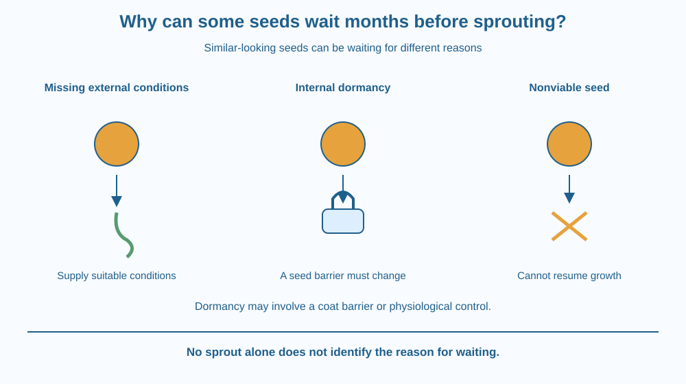

Distinguish a living seed waiting for suitable conditions from a seed with an internal block to germination. Use viability, quiescence and dormancy carefully. Explain how delayed sprouting can help a plant without assuming that every unsprouted seed is dormant or alive.
A packet of seeds can sit in a cupboard for months. Put some on damp paper, and a tiny root may eventually emerge. Other kinds of seed remain unchanged even when there is moisture and a suitable temperature.
Both cases look like waiting from the outside. Yet they need not have the same explanation. One seed may simply lack water. Another may have a protective coat or an internal condition that must change first. A third may no longer be alive. The outside appearance alone cannot distinguish these possibilities.
A seed contains a young plant, an embryo, together with protective tissues and resources that support early development. A viable seed is capable of germinating under appropriate conditions. Viability can be lost through age, damage or poor storage, and the rate differs among species.
Germination is the resumption of embryo growth. Water uptake helps rehydrate tissues and allows growth processes to restart. Oxygen and a suitable temperature are also important. Some seeds respond to light conditions as well. The exact requirements depend on the species.
A seed may fail to germinate because the surroundings are unsuitable. A dry seed waiting for water is often described as quiescent. Its environment has not supplied what it needs; an internal dormancy mechanism is not necessarily the obstacle.
Dormancy is more specific. A viable dormant seed does not germinate even when the external conditions that would otherwise allow germination are suitable. Something about the seed itself must change before growth can proceed.
One kind of dormancy involves a seed coat that limits water entry. Another involves internal physiological controls in the embryo or surrounding tissues. These are different barriers, so no single household treatment is appropriate for every seed.
Some species lose dormancy during a period of dry storage. Others respond to a particular sequence of moist conditions and temperatures. A winter-like period can act as a seasonal cue for certain species, but it is wrong to say that every seed needs chilling.
Delayed germination can prevent a seed from starting growth during a brief favourable spell followed by conditions that would kill the seedling. Not all seeds in a natural population necessarily respond at exactly the same moment. Spreading emergence across time can reduce the chance that one bad episode destroys all seedlings.
None of this means seeds can wait forever. Their tissues can deteriorate, and some kinds tolerate dry storage poorly. A seed's history matters. When a seed does not sprout, record what was tried instead of immediately labelling it dormant, dead or defective.
Imagine a room with three requirements for opening a door. There must be power, the outside switch must be pressed, and an internal lock must be released. A broken mechanism will not work even if both controls are correct.
In the seed model, suitable external conditions are like the outside switch, dormancy is like an internal lock, and viability means the living system can still function. The analogy helps keep three explanations separate.
Make three cards: unsuitable conditions, dormancy, and loss of viability. Place them beside an unsprouted-seed drawing. Ask what extra evidence you would need before choosing one card.
The SVG shows three pathways from an unsprouted seed. One receives suitable water and temperature and begins growth. A second remains blocked by an internal dormancy symbol. A third is labelled nonviable and does not resume growth.
A seed-coat inset shows one possible barrier to water entry. The inset is an example, not a claim that all dormancy comes from coats. Another label identifies physiological control as a separate possibility.
The growing root marks the start of visible germination. This diagram concerns when growth begins, not how a growing root senses its direction.

Farmers and gardeners need seeds that emerge at an appropriate time and with reasonable consistency. Seed packets often give species-specific sowing advice because moisture, temperature and light requirements vary. A cupboard rule copied from one plant may fail for another.
In seasonal Indian landscapes, germinating during a short shower before reliable rain could expose a seedling to drying. Delayed germination can therefore matter to survival. However, local patterns must be observed rather than inferred from one example.
Seeds stored for planting are different from prepared food sprouts. A germination investigation should not be treated as food preparation, particularly if samples have been handled repeatedly or show mould.
Use a few whole, untreated mung beans intended for sowing or a fresh seed packet, two clean dishes and paper towel. Do not use coated or chemically treated seeds. Do not eat the experiment.
The setup takes five minutes; germination takes longer. This comparison tests a missing environmental condition. It does not by itself demonstrate dormancy. Discard mouldy material with an adult's help and wash hands after handling.
If a seed fails to germinate on damp paper, what would you check before declaring it dormant? Consider whether the temperature is suitable, whether the seed is viable and whether the paper has become waterlogged.
Now explain why adding more and more water is not always a solution. A trial needs appropriate conditions, not simply the largest possible amount of one ingredient.
What does a viable seed retain the ability to do?
Answer: A — Viability means the seed can germinate when its requirements are met.
Why is a dry seed not automatically described as dormant?
Answer: B — A seed can be quiescent because external conditions are unsuitable.
Seeds fail on flooded paper. What is a useful next check?
Answer: C — Excess water can restrict oxygen, so unsuitable conditions must be considered first.
Write a troubleshooting guide for a school seed tray with no visible seedlings. Your first questions should check the seed source and growing conditions. Only then should the guide consider dormancy and species-specific requirements.
Do not recommend cutting coats, using chemicals or applying extreme temperatures. The aim is to separate possible explanations and find reliable growing instructions, not to force every kind of seed to sprout immediately.
A seed that does nothing visible can still be part of a successful survival strategy. Starting growth at the wrong moment can be more dangerous than waiting. The important distinction is that apparent inactivity has several possible causes, and only some of them count as true dormancy.
An unsprouted seed may lack suitable conditions, remain dormant, or be nonviable; these explanations look similar but require different evidence.